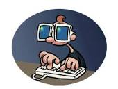

Une tablette tactile, aussi appelée tablette électronique, ou tablette multimédia ou bien tablette numérique est donc un ordinateur portable ultraplat, se présentant sous la forme d'un écran tactile sans clavier. Par ses applications, il offre à peu près les mêmes fonctionnalités qu'un ordinateur personnel.
Une tablette tactile, aussi appelée tablette électronique, ou tablette multimédia ou bien tablette numérique est donc un ordinateur portable ultraplat, se présentant sous la forme d'un écran tactile sans clavier. Par ses applications, il offre à peu près les mêmes fonctionnalités qu'un ordinateur personnel.
 Aller vers page 2